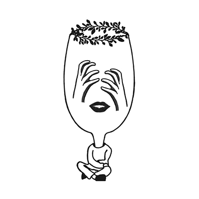

#10 페르소나 [담백하지 못한]
현대사회의 구성원들은 ‘인간관계에 경중을 두는 성향’이 만연하다. 서점에 가서
베스트셀러 목록만 봐도, 인간관계에서 받은 상처를 위로하려는 책들만
나열되어있다. 작가는 인간관계에 대해서 경중을 두는 것보다 ‘화살표적
인간관계’를 추구한다.
자신에게 상처가 될 정도의 무게감을 가져가지 않으며, [작가 ←→ 타인 A]간의
직접적인 관계에 집중한다. 경중을 둔다는 표현이 와닿지 않는다면, 작가는
타인 A 와의 직접적인 관계 외의 것들을 복잡하게 엮어서 보지 않는다고
표현한다.
그만큼 더 담백한 관계를 추구한다. 그림은 얼굴 속 또 다른 페르소나를
덜어내는 듯한, 눈을 뽑아내고 있다.